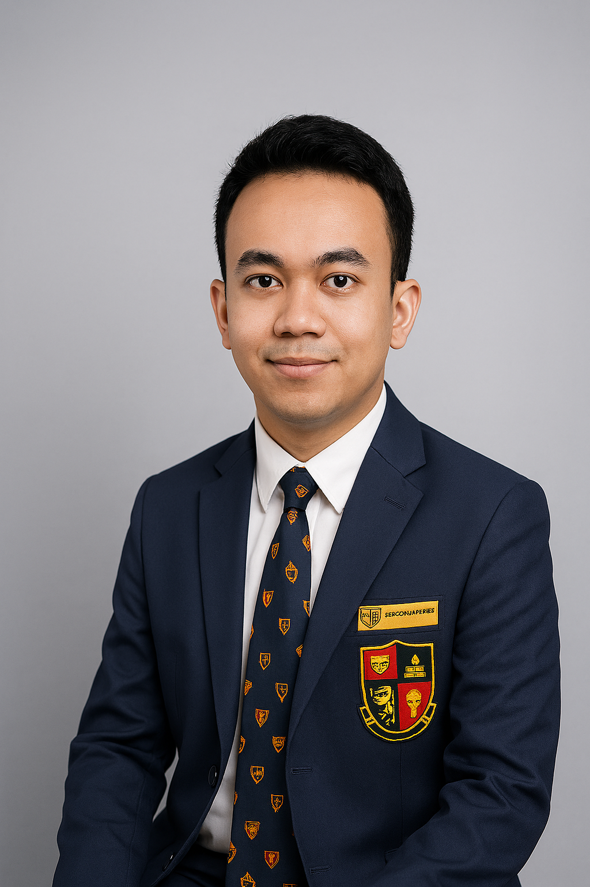
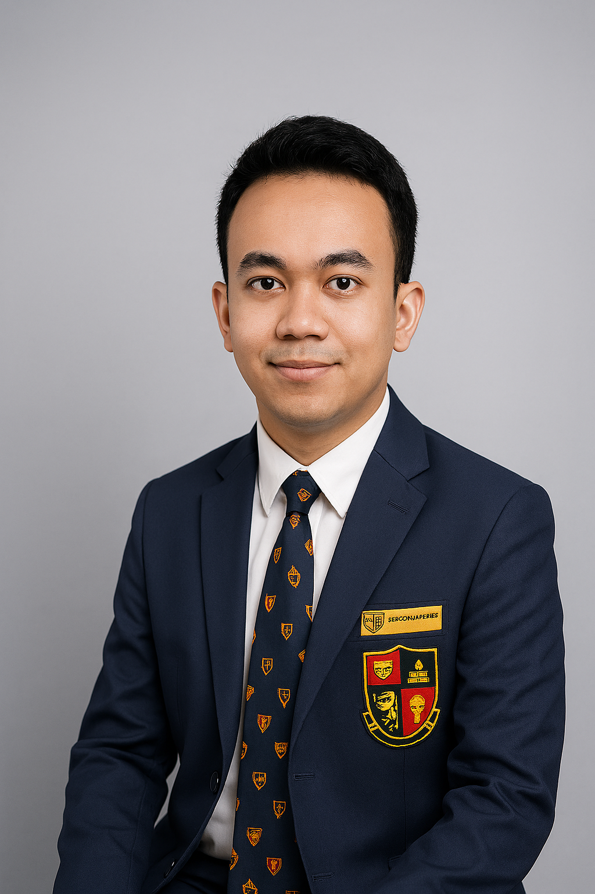
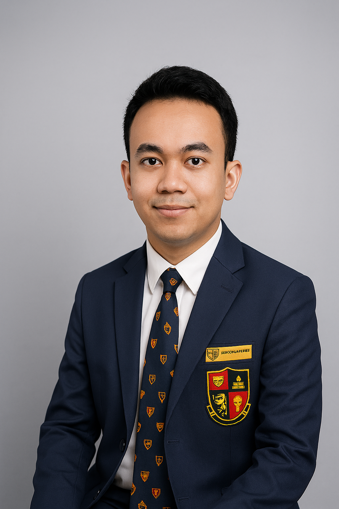

Motivated UUM Foundation Student with Strong Academic Results and Proven Leadership Experience

Professional Background
I am a dedicated foundation student at Universiti Utara Malaysia with a strong academic standing and proven leadership experience. My journey has equipped me with skills in research, problem-solving, and effective communication, developed through coursework, school leadership roles, and extracurricular involvement. I have a keen interest in the legal, administrative, and education sectors, and I am committed to applying my knowledge to real-world challenges. Through an internship, I aim to gain practical exposure, contribute meaningfully to organizational goals, and continue developing as a well-rounded professional.
Career Objectives
To secure an internship position in the legal, administrative, or education sector where I can apply my research, problem-solving, and communication skills while gaining practical experience. I aim to contribute positively to the organization’s success, develop my professional capabilities, and build a strong foundation for a future career in law and related fields.
Contact Information: No77 Taman Permata, Alor Setar, Kedah, Malaysia +60 12-400 7789 harithaashraf8@gmail.com LinkedIn: linkedin.com/in/asha_rith8 GitHub/Portfolio: github.com/Ash40869
Secret Unlocked: Passionate about innovation and community service!
Resume
Education
Foundation Studies in Management, Universiti Utara Malaysia (UUM), Sintok, Kedah (July 2025 – Present) - Relevant coursework: Introduction to ICT, Principles of Economics, Principles Of Management, Principles of Financial Accounting, English for Foundation Studies
Sijil Pelajaran Malaysia (SPM), Kolej Sultan Abdul Hamid, Alor Setar (Graduated: February 2025) - 8As (straight As) in core and elective subjects including Bahasa Melayu (A+), English (A+), Sejarah (A), Mathematics (A), Science (A), Principles of Accounting (A+), Perniagaan (A), Islamic Studies (A) - Prefectorial Board Secretary, Chairman of Kadet Remaja Sekolah, Chairman of Cooperative Club
Work Experience
Part-Time Tutor (Weekends), Pusat Tusyen Inspirasi, Taman Meranti, Alor Setar (February 2025 – June 2025) · Planned and delivered engaging lessons based on syllabus requirements for English subject. · Prepared customised worksheets and practice materials to strengthen students’ understanding. · Monitored and assessed students’ progress, providing constructive feedback to improve performance.
Part-Time Admin Assistant (Workdays), Ramli, Amrjit & Tan, Persiaran Sultan Abdul Hamid, Alor Setar (March 2025-June 2025) · Managed incoming calls, scheduled client appointments, and maintained the office calendar · Managed correspondence with clients and external agencies via email and letters · Maintained office supplies and ensured a neat, professional workspace
Skills
Microsoft Word
Excel
PowerPoint
Canva
Google Workspace
Time Management
Critical Thinking
Communication
Teamwork
Languages: Bahasa Melayu (Mother tongue), English (Fluent), Chinese (Basic)
Certifications
Microsoft Office Specialist (MOS) – Word, Excel, PowerPoint, 2022
Google Workspace Productivity Tools – Google Docs, Sheets, Slides, 2023
First Aid & CPR Certificate – Malaysian Red Crescent, 2023
Introduction to Legal Research – Coursera, 2024
Effective Communication Skills – LinkedIn Learning, 2024
Awards & Achievements
First Runner-up, Choral Speaking Competition, District Level – 2023
2nd Place, School Public Speaking Competition – 2022
Certificate of Appreciation, Prefectorial Board Secretary – 2023
Volunteer Service Award, Malaysian Red Crescent – 2023
Group Management Assignment – Organizational Studies
Led a 5-member team in creating a simulated company plan covering structure, budgeting, and performance tracking.
Leadership & Communication Workshop – Foundation Student Club
Co-organized a workshop to help peers enhance teamwork, leadership, and public speaking skills.
Orientation Week Committee – UUM Foundation Centre
Coordinated and facilitated activities for over 200 new foundation students, ensuring smooth scheduling and high engagement. Problem: New students often feel overwhelmed; Solution: Structured activities with team-building; Impact: High engagement and positive feedback.
Generating Innovations – UUM Foundation Centre
To inspire students to create practical and original solutions that build creativity, problem-solving skills, and real-world readiness. Problem: Lack of innovation in students; Solution: Workshops and challenges; Impact: Enhanced skills and original projects.
Testimonials
“Ashraf is a dependable and proactive student leader who takes initiative and delivers quality results.” – Lecturer, UUM Foundation Centre
“His ability to organize events and work with diverse teams makes him a valuable contributor to any project.” – Student Club President
Blog + Vlog
Finding My Way: Through Leadership and Learning
Hello, my name is Ashraf Harith bin Abdul Halim, and I am a foundation student at Universiti Utara Malaysia (UUM) pursuing Studies in Management. I grew up in Alor Setar, Kedah, and have always been driven by a passion to resolve issues and help others realize their success. My academic journey started with simple As in my SPM at Kolej Sultan Abdul Hamid, where I received A+ marks for subjects like Bahasa Melayu, English, and Principles of Accounting. This provided a basis for communication confidence and analytical capability—skills that I have carried over to university courses like Introduction to ICT and Principles of Management. Apart from studying, leadership has shaped me. Being Prefectorial Board Secretary, Chairman of Kadet Remaja Sekolah, and Chairman of the Cooperative Club, I had the experience of organizing events, motivating people, and handling tasks within deadlines. These were not titular positions but opportunities to grow as an individual. For instance, organizing school activities taught me that empathy in the collaboration with others is important—listening to different suggestions leads to better outcomes. I'm drawn to the law, administration, and education sectors because they present me with avenues to apply research and communication to real problems. Currently, I'm looking for an internship to link theory with practice, facilitating innovative teams as I build my career in areas related to law. Lessons learned: Persistence is everything—managing studies alongside extracurriculas taught me that time management is not so much a skill but an attitude (Covey, 2020). Setbacks, such as a group project glitch, taught resilience: Adapt and learn from failures. Check out my vlog below for a speedy personal intro and why these lessons thrill me for the future!
References Covey, S. R. (2020). The 7 habits of highly effective people. Simon & Schuster.
Developing Expertise: Lessons from My Work and Leadership Experience
Being a determined UUM foundation student, my fields of expertise are problem-solving, organization, and communication—learned from part-time work and leadership positions. As a part-time tutor at Pusat Tusyen Inspirasi (February-June 2025), I planned engaging English lessons, made customized worksheets, and tracked student progress. This experience refined my ability to adapt education to individuals, distilling complex concepts into bite-sized nuggets. Similarly, as a part-time admin assistant with Ramli, Amrjit & Tan (March-June 2025), I answered calls, made bookings, and processed client mail. These tasks promoted my administrative skills, emphasizing precision and professionalism under intense pressure. My school leadership tasks maximized this experience. I was Chairman of Kadet Remaja Sekolah and the Cooperative Club and organized events and teams, creating teamwork and innovativeness. In university projects, e.g., the Group Management Assignment, I was in charge of a 5-member team to simulate a company plan, with budgeting and performance tracking. The Leadership & Communication Workshop that I co-organized helped other students achieve teambuilding and public speaking—mirroring my own growth. These experiences exhibit my technical (e.g., Microsoft Office, Canva) and soft (e.g., critical thinking, teamwork) skills relevant to legal/admin/education sectors. Lessons learned: Open communication bridges gaps—offering helpful feedback in tutoring drastically altered outcomes. In addition, team diversity, as in the Orientation Week Committee for 200+ students, stimulates creativity (Robbins & Judge, 2022). Lessons learned: Flexibility is essential; a difficult admin task instructed me in how to prioritize when under pressure. Always ask for feedback—it's the quickest route to development. Watch my vlog for a more in-depth look at an authentic work story and how these skills equip me for internships!
 
